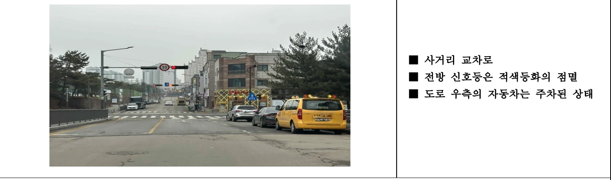

689. Which of the following pairings of information and interpretations from the given situation are incorrect? (Select TWO)

- ①School zone sign – Indicates a school zone where children are especially protected.
- ②Maximum speed limit sign – Drivers are required to drive at a speed of less than 30 km/h.
- ③Crosswalk sign – Drive with caution for pedestrians.
- ④Flashing red traffic light – Drive slowly.
- ⑤Cars parked on the right side of the road – Take caution as pedestrians may suddenly come out from between parked cars.
Show answer
Answer
① School zone sign – Indicates a school zone where children are especially protected.
④ Flashing red traffic light – Drive slowly.
Reference
The vehicle stopped on the right is a children's school bus. The sign attached to the rear of the children's school bus is a child protection sign that indicates that the bus is carrying children or infants (Road Traffic Act, Article 53, Paragraph 1, Road Traffic Act Enforcement Rules [Appendix 14]). Child protection signs installed in child protection areas must be installed in accordance with the Road Traffic Act Enforcement Rules [Appendix 6] serial number 324. In the photo, there is no child protection sign installed in the child protection area. The meaning of flashing red lights is that when there is a stop line or crosswalk, cars and horses must first stop immediately before the stop line, crosswalk or intersection, and may then proceed while paying attention to other traffic (Road Traffic Act Enforcement Rules [Appendix 2]).
Reference text is a machine translation for study.